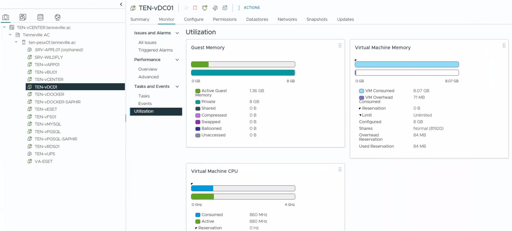

Objective
This check verifies the CPU and memory usage of virtual machines in order to identify abnormal resource consumption that could indicate performance issues or misconfiguration.
This is a verification-only control. No resource tuning or remediation is performed as part of this check.
Prerequisites
- Access to vSphere Client
- Read or monitoring permissions
- Access to ESXi hosts and virtual machines
Open vSphere Client
Log in to the vSphere Web Client using a web browser. Access the vCenter instance via its IP address or FQDN.

Review CPU and Memory Usage
Select a virtual machine and review CPU and memory usage from the Monitor → Utilization view.
- No sustained high CPU usage
- No memory saturation or ballooning
- No performance-related alerts

Result Interpretation
- ✅ OK – CPU and RAM usage within normal range
- ⚠️ WARNING – Occasional peaks or moderate pressure observed
- ❌ NOK – Sustained high usage or clear performance issue detected